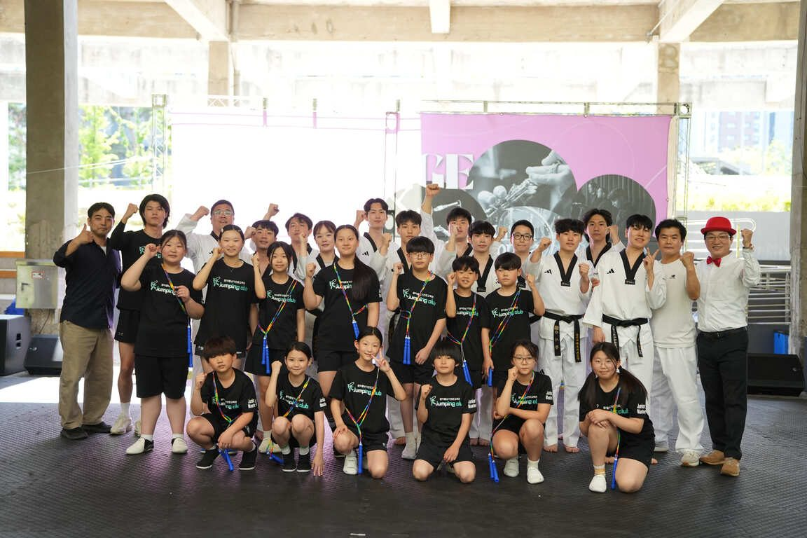

Education
태권도 관장, 체육 지도자, 방과후 강사, 비전공자도 도전하며 전문 지도자의 꿈을 이룰 수 있도록 줄넘기 및 태권줄넘기 자격연수, 보수교육, 강사 과정, 줄넘기 및 태권줄넘기 심판 연수 등을 운영합니다.
기술, 지도 수준이 달라집니다
기초부터 고급 기술까지, 단계별 지도법을 익혀 실제 수업에 자신감을 더하고 아이들이 좋아하는 실전 수업을 할 수 있습니다.상담, 운영력이 달라집니다
아이들을 통솔하며 지도 철학과 설득 및 학부모님의 상담법을 배우며 관원이 늘어나는 법을 배웁니다.
정기
지도자 자격연수 3·2·1급
등록민간자격 줄넘기지도자 과정 · 급수별 기술, 지도법, 교육자료

매주
음악줄넘기 일요강사반
연령별·수준별 실전 수업법, 교육자료 활용, 학부모 상담, 교육관 운영

비정기
태권줄넘기 자격연수
태권도와 줄넘기를 결합한 지도자 과정(3·2·1급)

비정기
경영 세미나
교육관 운영·마케팅 세미나

비정기
심판 연수
대회 심판 지도자 과정
홈페이지 신청
과정·급수 선택 후 신청서 작성
결제
카드결제 · 계좌이체
연수 참석
연수 이수 · 실기 검정
자격증 발급
검정 기준 충족 시 급수별 자격증 수여 · 3급 → 2급 → 1급 순차 취득
국가자격인가요?
아니요. 사단법인 한국음악줄넘기협회가 발급하는 등록민간자격입니다. 자격명: 줄넘기지도자 · 등록번호: 2015-001620
자격증을 따면 바로 일할 수 있나요?
자격증 소지자를 우대하는 공고가 있으나, 채용은 기관별 서류·면접 절차에 따라 진행됩니다. 공고는 구인·구직 게시판에서 확인할 수 있습니다.
줄넘기를 잘 못해도 연수를 받을 수 있나요?
네. 두 발로 뛰기만 하면 가능합니다. 기초 기술부터 단계별 지도법까지 배우므로 줄넘기 경험이 부족해도 참여할 수 있습니다. 3급은 만 19세 이상이면 응시할 수 있습니다.
체육 전공자가 아니어도 지도자로 활동할 수 있나요?
네. 체육 전공자가 아니어도 전문 지도법을 배우고 방과후 강사, 줄넘기 전문 강사 등 다양한 진로에 도전할 수 있습니다.
하루에 3급부터 1급까지 모두 취득할 수 있나요?
하루에 모두 취득할 수는 없습니다. 3급부터 순차적으로 취득해야 하며, 현재는 상위 급수 응시를 위한 별도 유예기간이 없습니다.
다른 협회에서 3급을 취득했는데 2급부터 응시할 수 있나요?
네. 2급에 필요한 기술과 지도 능력을 갖추었다면 응시할 수 있습니다. 자세한 사항은 협회 사무국 070.7703.7713으로 문의해 주세요.
자격연수와 일요강사반은 무엇이 다른가요?
자격연수는 기술·지도법을 배우고 자격을 취득하는 과정이고, 일요강사반은 지도법·학부모 상담 등 실제 수업 능력을 키우는 실습 과정입니다.
보수교육은 언제 받아야 하나요?
보수교육은 본 협회 1급 자격 취득자가 신청할 수 있습니다. 보수교육 주기
수강료 환불 규정이 있나요?
환불 규정
연수원 주차가 되나요?
수원 연수원은 주차가 가능하며, 주차비는 별도 부과될 수 있습니다.